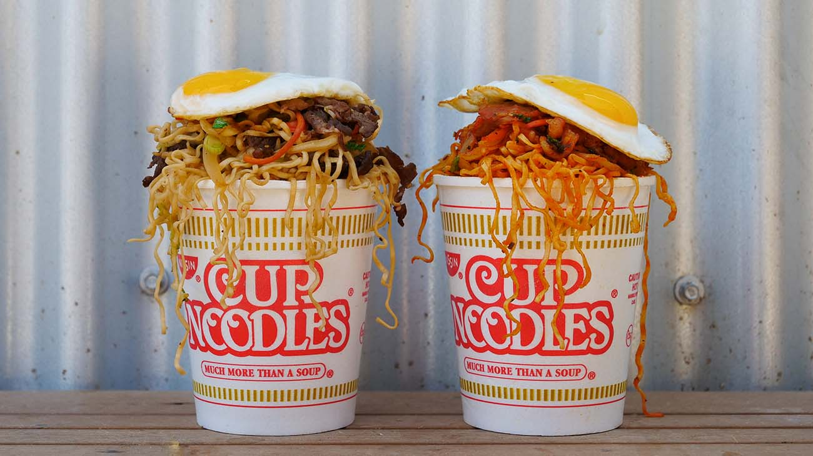

Cup Noodles

Description
Hi guys! The recipe I’m going to share today is super fun Cup Noodles Recipe!!
Ingredients
- 1 tbsp soy sauce
- 1 1/2 tsp sugar
- 1 tsp mirin
- 1 tsp sesame oil
- 1/2 tsp sesame seeds
- 1/8 tsp black pepper
- 4 oz thinly sliced beef ribeye, skirt steak, or chuck
- 2 oz green cabbage, sliced
- 1/4 onion, sliced
- Small handful shredded carrot
- 2 cloves garlic, chopped
- 2 beef flavor Cup Noodles
- 1 tsp vegetable oil
- 1 green onion, chopped
Directions
- For the Bulgogi Cup Noodles, combine soy sauce, sugar, mirin, sesame oil, seeds and black pepper. Mix well then add beef, cabbage, onion, carrot and garlic and mix one more time.
- Pour boiling hot water to Cup Noodles (as you will do to eat the cup noodles), let it sit for 2 minutes (or 1 minute less then the direction of the cup noodles package you’re using) then drain completely and set aside. Keep the Cup Noodles’ “cup” if you want to serve on it.
- Heat a wok or large skillet over high heat, add oil and beef mixture. Stir fry for 2 to 3 minutes or until beef is fully cooked and vegetables are soften. Add the noodles and stir fry until everything is well combined and the noodles are fully cooked, about 1 minute. Remove from heat, add green onion and serve on a Cup Noodles’ “cup” or a plate. Top it with fried egg if you like.